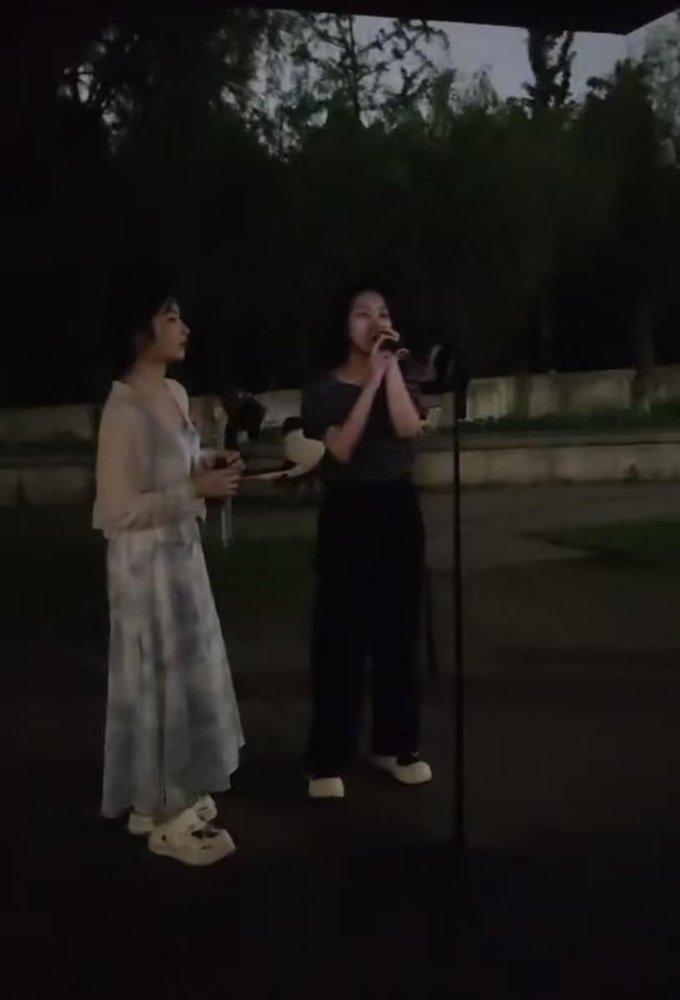

01 / 03
01 / 03PRESENCE MATTERS
表达不是
站在台上。
真正的表达也发生在倾听、停顿和回应里。舞台让我理解，存在感来自对当下的投入。

01 / 03PRESENCE MATTERS
真正的表达也发生在倾听、停顿和回应里。舞台让我理解，存在感来自对当下的投入。
LISTEN BEFORE ANSWERING
现场的节奏来自彼此的回应。给声音留出空间，也是在给关系和表达留下呼吸。
 03 / 03
03 / 03STAY IN THE ROOM
当注意力回到此刻，表达就不需要被过度设计。它会从真实的感受和回应里自然发生。
A FEW NOTES
听见环境，也听见别人。
给表达留下停顿和空间。
把注意力放回此刻。